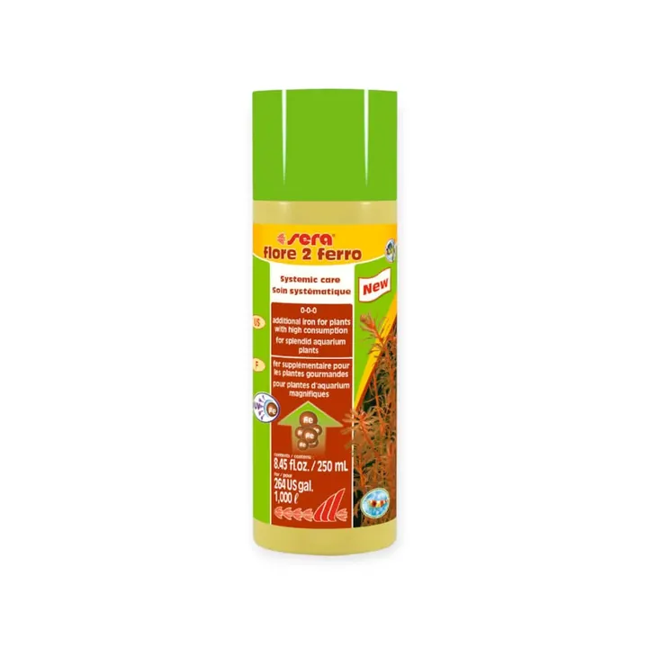

من مجموعة أكوا هافنAQUA HAVEN / THE COLLECTION
سماد الحديد Sera flore 2 ferro – 250 مل
حديد إضافي بمركّب مخلّب ثابت ضد الأشعة فوق البنفسجية، يبقى متاحاً للنباتات أياماً حتى مع فلاتر UV-C — لألوان حمراء زاهية ونمو قوي.
٧٩ ر.س
متاح ضمن اللقطة المرجعية
مساحة للاكتشاف، قبل الاختيار.
واصل استكشاف المجموعة هذه معاينة للتصميم. الأسعار والخيارات والتوفر مرجعية وغير متزامنة؛ لا يمكن الطلب أو الدفع من هذه الصفحة.
A CLOSER LOOK
نظرة أقرب.
سماد الحديد Sera flore 2 ferro – 250 مل — حديد إضافي بمركّب مخلّب ثابت ضد الأشعة فوق البنفسجية، يبقى متاحاً للنباتات أياماً حتى مع فلاتر UV-C — لألوان حمراء زاهية ونمو قوي.
المميزات
- حديد إضافي للنباتات عالية الاستهلاك
- ثابت ضد UV — يشتغل حتى مع فلاتر UV-C
- يمنع شحوب الأوراق ويعزّز الألوان الحمراء
- بدون نترات أو فوسفات
- آمن تماماً على كل اللافقاريات
طريقة الاستخدام
5 مل لكل 20 لتر مرة أسبوعياً أو حسب الحاجة. الغطاء يستخدم كمكيال: غطاء ممتلئ حتى نهاية التموّج الخارجي = 10 مل.
المواصفات الأساسية
- العلامة: سيرا (Sera) – ألمانيا
- نوع المنتج: سماد حديد سائل
- الحجم: 250 مل — يكفي 1000 لتر
- مناسب لـ: النباتات الحمراء وسريعة النمو في الأحواض كثيفة الزراعة والإضاءة
- رقم الصنف: 03345
المصدر: الموقع الرسمي لشركة sera الألمانية.